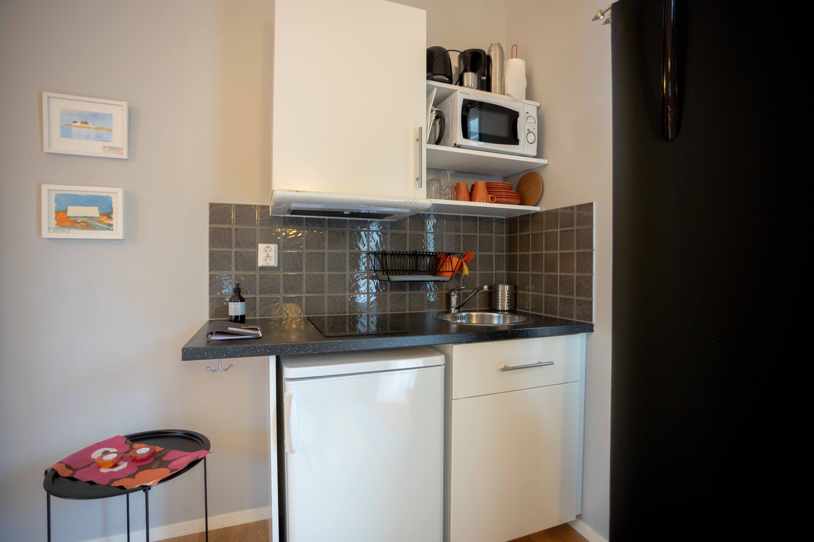
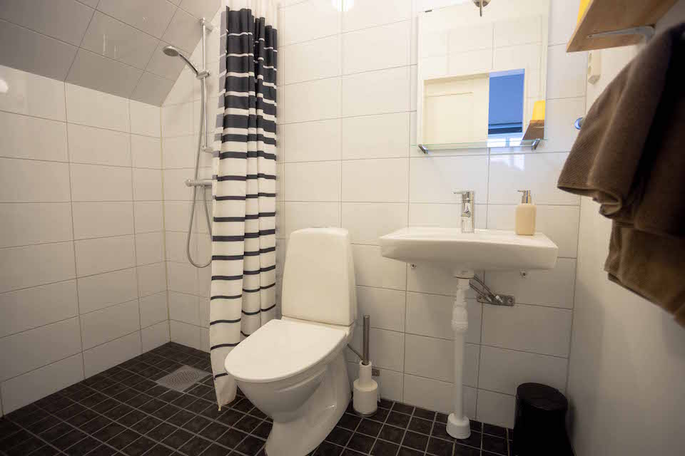

"Fantastikst läge på den Gotländska väskusten. Bra badstrand!"
"Mycket trevligt värdpar. Nära till Visby GK med Sveriges bästa 18-hålare."
"Fräscht boende med en mysig lanthandel runt hörnet."
Välkommen till Ljungs Fem Rum!
Mitt på den Gotländska västkusten i Västergarn hittar du vår oas, Ljungs Fem Rum. Hotellet består av 9 Studios omgärdade av grönska och lammhagar. Vi erbjuder ett familjärt boende av hög standard med personlig service. Samtliga Studios har egen ingång med tillhörande uteplats, ett pentry samt helkaklade badrum med golvvärme. I priset ingår:
- Sängkläder
- Handdukar
- Städning vid avresa
Vi har även ett utekök med tillhörande gasol- och kolgrill samt cyklar som disponeras fritt.
Varmt välkomna,
Elise & Jakob med familj